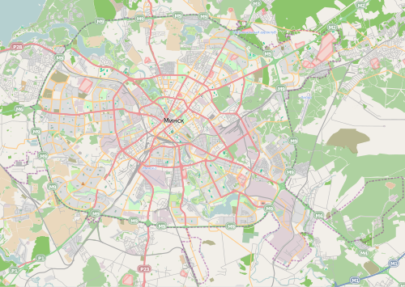

Продукция
ОАО «Минский тракторный завод» разрабатывает и изготавливает колёсные и гусеничные тракторы, мотоблоки, прицепные и навесные орудия для сельскохозяйственных, строительных, лесных и коммунальных работ, запасные части, товары народного потребления, организует на лицензионной основе их производство, оказывает услуги по налаживанию и проведению сервиса.
На 2019 год выпущено более 3,86 миллионов тракторов, из них свыше 2,6 миллионов поставлено более чем в 100 стран мира. Предприятие выпускает около 100 моделей разных видов машин с более чем 200 вариантами сборки для различных эксплуатационных условий мощностью от 9 до 455 л. с.
Возможности
По состоянию на 2017 год на заводе насчитывалось 5882 единицы металлорежущего оборудования, 990 единиц кузнечно-прессового оборудования, 118 деревообрабатывающих станков, 851 единица литейного оборудования и 4389 единиц подъёмно-транспортного оборудования.
Местоположение

©Яцко Антон Игоревич